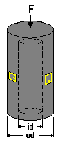
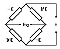

Design Considerations
Design ConsiderationsDesign Verification command
Design Considerations

Inputs (Allowed Range)
 Applied Force, F (0.000 to 500,000 lbf [0 to 2.224E+6 N])
Applied Force, F (0.000 to 500,000 lbf [0 to 2.224E+6 N])
Force applied in the axial direction, either as a point load along the centerline or as an evenly distributed load over the ends.
Inside Diameter, id (0 to 50 in [0 to 1270 mm])
Cylinderical column of uniform thickness in the gaged area. An element with an inside diameter of zero is a solid round element.
Outside Diameter, od (0.020 to 50 in [0.51 to 1270 mm])
Cylinderical column of uniform thickness in the gaged area. Cannot be smaller than the inside diameter.
Poisson's Ratio (0.1 to 0.4)
For the material from which the beam is constructed.
Modulus of Elasticity (5E+6 to +50E+6 psi [34.5 to 345 GPa])
For the material from which the beam is constructed.
Gage Factor (1.0 to 5.0) The default value is 2.00.
From Engineering Data Form supplied with gages.
Calculated Values (Units)
 Pressing the COMPUTE BUTTON after entering the variables (within their acceptable ranges) calculates the following three output values:
Pressing the COMPUTE BUTTON after entering the variables (within their acceptable ranges) calculates the following three output values:
 Axial Strain (microstrain)
Axial Strain (microstrain)
Strain in the long direction of the column. It has a negative value for compressive loads. Ideally in the strain range of 1000 to 1700 microstrain at rated load.
Circumferential Strain (microstrain)
Strain in the transverse direction of the column. It has a positive value for compressive loads.
Span at Applied Force (mV/V)

Calculated output of a full-bridge circuit with gages connected in the Wheatstone bridge circuit as shown above, when the force is equal to the value entered. The mV/V units are millivolts of bridge output per volt of bridge excitation.
Error Messages
 "The Inside Diameter cannot be greater than or equal to the Outside Diameter."
"The Inside Diameter cannot be greater than or equal to the Outside Diameter."
�The calculated nominal gage strain exceeds 1700 microstrain, which is considered to be the maximum strain level recommended for normal full scale transducer operation.�
A value of 1700 microstrain is considered to be the maximum strain level recommended for normal transducers. However, TransCalc will calculate the nominal gage strain until the value reaches 5000 microstrain.
�Design Impracticable. Gage strain exceeds 5000 microstrain�
No common transducer material will survive 5000 microstrain without an unacceptable amount of permanent zero offset. Accordingly, no calculations are made for bridge output. Adjust inputs so that nominal gage strain is less than 5000 microstrain.